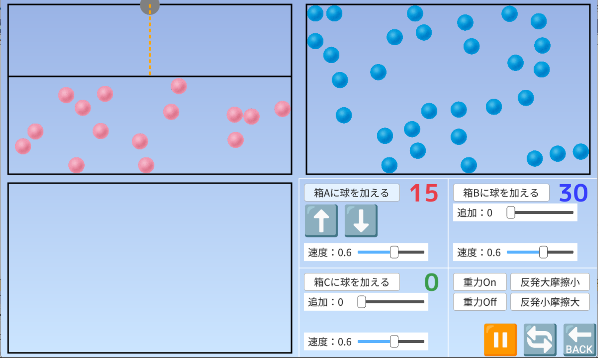
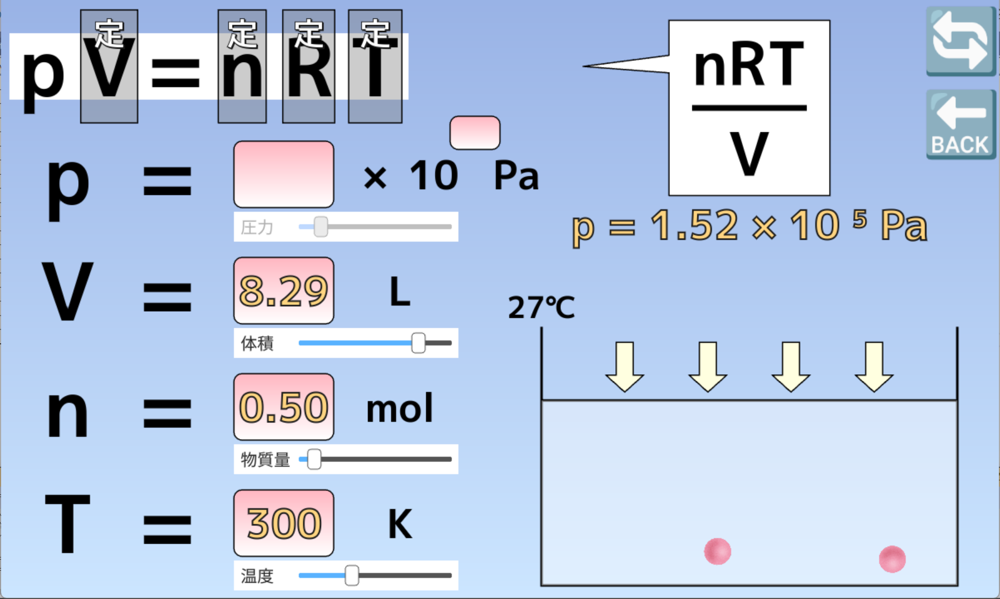

気体の状態方程式
① 熱運動¶
物質を構成する粒子（原子や分子など）は静止しているわけではなく、常に不規則に動いています。この運動のことを、熱運動といいます。私たちの身の回りにあるすべての物質（空気であろうが水であろうが、机の上の紙と鉛筆であろうが）は、熱運動を行っています。熱運動の激しさは、その物質の温度によって決まります。
温度とは、粒子の熱運動の激しさを数値化したものです。温度が高いと、粒子は早く動き回り、温度が低いと、粒子はゆっくりと動きます。
また、物質の状態（固体、液体、気体）によって、粒子の動き方はだいぶ違います。
固体： 粒子は規則正しく並び、固有の位置でわずかに振動している。
液体： 粒子どうしは接しているが、流動的に動きながら、位置を変える。比較的密だが、位置は乱れている。
気体： 粒子が広い空間を動き回る。粒子どうしの間隔は非常に広く、バラバラに存在している。
一定の大きさの容器の中に、さまざまな速度で動く「球」をたくさん入れたとします。球が容器の壁や他の球にぶつかれば、衝突の角度に応じて、はね返ります。このイメージが、物理や化学で「気体」を扱う際の最も基本的なモデルである気体分子運動論の考え方です。

アプリの使い方
- 「速度」と「追加」のスライダーを操作し、「球を加える」ボタンをクリックすれば、箱の中に球が入ります。箱A（左上）は1つずつ、箱B（右上）は0.10秒間隔で、箱C（左下）は一気に球が入ります
- 箱Aでは、⬆️⬇️ボタンで天板を動かすことができます
- 「重力の有無」、「反発と摩擦の大きさ」は切り替えることができます
- 🔁マークを押せば、球の種類（1つの球か、連結した球か）を切り替えることができます
- 🔙マークを押せば、すべての球を削除します
② 気体の状態方程式¶
先ほどの「球」のモデルを、科学の世界では理想気体（Ideal Gas）と呼びます。このモデルには、以下のような前提があります。
- 弾性衝突： 球が容器の壁や他の球にぶつかったとき、エネルギーが熱や音として失われず、勢いを保ったまま、はね返る（これを、弾性衝突といいます）。
- 球の大きさは極めて小さい： 容器の大きさに比べて、球そのものの大きさは無視できるほど小さい。
- 引力がはたらかない： 球どうしが近づいても、くっついたり引き合ったりしない。
気体の状態方程式：pV = nRTとは、このモデルをベースに、気体の法則としておなじみの「ボイルの法則」や「シャルルの法則」、「アボガドロの法則」などをすべて組み合わせたものです。

アプリの使い方
- 🔁マークを押せば、モードを切り替えることができます
- モード1：左上のp、V、n、Tをクリックすれば、その量が定数としてみなされます（その後、スライダーを操作し、任意の値に設定することができます）。p、V、n、Tのうち、3つの記号をクリックすれば、残り1つの記号の値が計算されます
- モード2：物質量nが一定のモードです。左上のp、V、n、Tをクリックすれば、その量が定数としてみなされます。状況に応じて、「ボイルの法則」や「シャルルの法則」などの気体の法則が表示されます
- モード3：このモードでは、pV=nRTを「〇=kn（kは比例定数）」の形に変形します。「p=kn」もしくは「V=kn」の形の場合、容器の中に球を加えることができます
- 🔙マークを押せば、状況をリセットします
気体の状態方程式は、さまざまな考え方に応用できます。
-
ドルトンの分圧の法則
気体の体積Vと絶対温度Tが一定の場合を考えましょう。pV=nRTを変形すると、p=kn（kは比例定数）の形となり、圧力pは物質量nに比例します。つまり、容器内に1個、2個…と分子を加えると（nが増えると）、圧力は「p = p₁ + p₂ …」と増加します。1 別の種類の分子を加えると、分子aと分子bの圧力（分圧）の和が混合気体の圧力（全圧）となります。式で書くと、「p = pa + pb …」が成り立ちます。これを、ドルトンの分圧の法則といいます。
-
混合気体の体積
圧力Pと絶対温度Tが一定の場合を考えましょう。pV=nRTを変形すると、V=kn（kは比例定数）の形となり、体積Vは物質量nに比例します。つまり、容器内に1個、2個…と分子を加えると（nが増えると）、気体の体積は「V = V₁ + V₂ …」と増加します。別の種類の分子を加えると、分子aと分子bの体積（分体積）の和が混合気体の体積となります。式で書くと、「V = Va + Vb …」が成り立ちます。
-
分子aと分子bは当然、互いに反応しないものでなければなりません（窒素N₂と酸素O₂など）。 ↩